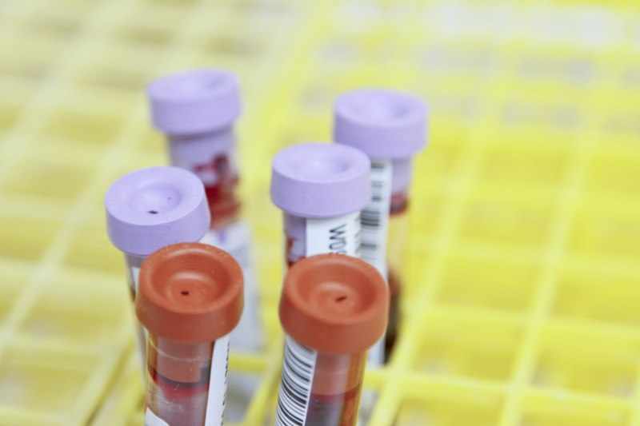

Основные направления
30 услуг для клиентского каталога — от check-up до хирургии.

Кардиология
Диагностика сердца и сосудов, холтер, СМАД.
Подробнее →

Гастроэнтерология
Приём, ФГДС, колоноскопия.
Подробнее →
Амбулаторная хирургия
Операции одного дня, быстрое восстановление.
Подробнее →

УЗИ-диагностика
Экспертный класс, все основные зоны.
Подробнее →

Стоматология
Терапия, эстетика, имплантация.
Подробнее →

Check-up
Комплексные программы обследования.
Подробнее →